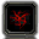
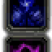
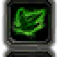

Classic WoW · patch 1.12 · checked against VMaNGOS · WoW Forever outlook
Ragnaros's fire, Sapphiron's frost and Huhuran's poison can kill a fully healed raider faster than healers keep up. Resistance gear cuts that damage by up to about 70%. This site shows how much, which fights need it while you're progressing and which still need it once your raid is geared, and when you can skip it. You can test every claim yourself.

Fire
Frost
Nature Shadow Arcane · not Holy, not physicalThe 10-second answer
Some bosses deal constant magic damage, more than your healers can keep up with. Resistance is the only stat that shrinks magic damage, by up to 75% on paper (about 69% in practice) at 315 points. On those fights the gear makes the damage healable. Once your raid has more healing and kills faster, many of those fights stop needing it.
Armor does nothing against spells, and healing has a ceiling: mana. Damage that never stops, like Sapphiron's Frost Aura on all 40 players every 2 seconds, multiplies across the raid: 40 × 300 = 12,000 damage per second at zero resistance.17V At the cap it drops to under 4,000. Healers can sustain the second figure. They can't sustain the first.
Spike damage is the other reason. A tank already taking melee hits from Ragnaros takes a 2,160–2,640 fire hit on every one of his swings.V Resistance lowers the average, and it makes the worst hits rarer.
Why "about 69%" and not 75%? The formula caps at 75%, but VMaNGOS never lets a hit be 100% resisted. That share is folded into the 75% slice, so the average tops out at 68.75%. VMaNGOS's code comment cites old Elitist Jerks testing for this.V
Interactive · see it for yourself
Pick a fight, set your resistance and how much healing you get, then pull. Every hit rolls a partial resist from VMaNGOS's table. The fight runs at 3× speed.
It models the magic damage only, using VMaNGOS's ability values and timers, its partial-resist table, and its rule that most damage-over-time ticks resist only a tenth as often.V It leaves out the boss's physical melee, armor, dodges and parries, absorbs and healer mana. The healing slider is your choice, not a measured figure.
The line on the chart is how long you live at each resistance. It bends sharply upward once the damage left after resistance drops below your healing. On farm, healers bring more healing per second, so the bend arrives at lower resistance. That's the whole progression-versus-farm story in one picture.
The mechanics
Every spell rolls twice. Roll one: did it hit? That depends on the level gap and spell hit. Roll two: how much does resistance block? Effects like fears and knockbacks either land or don't. Damage gets shaved by 0, 25, 50 or 75%, averaging out to your resistance percentage.
Two numbers matter: the caster's level and the target's resistance in that school. Only fire, frost, nature, shadow and arcane can be resisted.2
The miss chance depends on the level gap: 4% against your own level, 17% against a raid boss. The log calls a miss a "Resist", but resistance played no part in it. Spell hit gear lowers this roll only.1 V
Spells that slow, stun, fear, root, silence or knock back are binary: all or nothing. Pure damage can be partly blocked.1 V
Your resistance percentage becomes the chance the effect fails outright. That's why Ragnaros tanks stack fire resistance: Wrath of Ragnaros is a knockback, so at 315 it fails about 3 times in 4.V
The hit loses 0%, 25%, 50% or 75%. Over many hits it averages to your resistance percentage. That average is what keeps you alive.1 V
A boss is 3 levels above you, so 17% of your spells miss. Gear with +hit fixes that, but only up to +16%. After that, 1 in 100 still misses.
Against a raid boss, about every 4 points block 1% more, up to 315 points. Past 315 nothing changes. Against another level-60 player, the cap is 300.
Spell penetration (P) only cancels the target's base resistance. Since patch 1.9.0 it can't push resistance below zero.1 V
Hidden boss resistance. When a player casts on a higher-level creature, the creature gets bonus resistance to every school. Sources disagree on the size:
All the sources agree that binary spells ignore this bonus and that penetration can't remove it. The wiki also mentions a level-20 minimum. VMaNGOS applies that minimum only to negative resistance, not to the normal formula.
A hit doesn't lose the same amount every time. It loses 0, 25, 50 or 75%, chosen at random, and the average matches your resistance percentage.
VMaNGOS's table has 31 rows, one for every 10 resistance from 0 to 300 at level 60. The code comment says it was copied from a forum image of a Blizzard table. A few rows don't add up to 100%, which points to copying mistakes. The code uses a straight-line blend between rows and folds the 100% slice into 75%.V
Damage over time. VMaNGOS rolls a partial resist on every tick, but at a tenth of the normal chance. That follows a Blizzard developer's post that DoTs "were 1/10th as likely to be resisted". The code calls the details "somewhat a guess". Four DoTs follow the normal rules because video evidence shows them resisting, among them Vaelastrasz's Flame Breath and Sapphiron's Frost Aura.V Classic players argued over the same thing in 2020.6
Binary: effects that land in full or not at all. In VMaNGOS that covers anything that slows, stuns, fears, roots, silences or knocks back. Examples are Wrath of Ragnaros, Kel'Thuzad's Frostbolt, Huhuran's Noxious Poison and Chromaggus's Time Lapse.V
Partial: pure damage, like Ragnaros's Elemental Fire, Sapphiron's Frost Aura and Huhuran's Poison Bolt.
Unresistable: resistance never applies. Examples are Sapphiron's Frost Breath, Nefarian's Shadow Flame, Loatheb's Inevitable Doom and Kel'Thuzad's Frost Blast.V On the boss icons below, a red dot marks these.
Progression vs farm
During progression your raid has less healing and kills slowly, so fights last longer and every point of resistance matters. On farm the raid is geared, healers heal more, and bosses die before the damage piles up. Most resistance requirements fade. Two never do: Sapphiron's never-ending aura and Nefarian's cloak.
The damage has a time limit. Huhuran's deadly bolts start only when she berserks at 30%. Vaelastrasz is a 3-minute race. The more damage your raid does, the shorter that window, so the gear matters less.151120
Healing outgrows the damage. In the arena above, look at where the line bends upward. More healing per second moves the bend to lower resistance.
Only a few people take it. Ragnaros's fire hits the tank, and Huhuran's bolts hit only the 15 closest players. Guilds shrink that group first.715
Damage that hits everyone for the whole fight. Sapphiron's Frost Aura hits all 40 players every 2 seconds until he dies. Faster kills shorten it but never remove it. The wiki calls frost resistance "mandatory".17
An item gate. Without the Onyxia Scale Cloak, Shadow Flame's damage-over-time kills. Gear can't replace the cloak.13V
A knockback you can't afford. Ragnaros tanks keep fire resistance even on farm, because a resisted Wrath of Ragnaros means the tank isn't thrown back and keeps threat.V
Encounter by encounter
Each boss has two labels: Progression (your first kills) and Farm (a geared raid). Hover or tap an ability icon for its numbers. Open "Full detail" for every source and every point where sources disagree.
Planner
Your gear, plus what your raid brings. Buffs that don't stack only count once.
For the sceptics
Cast thousands of spells under the rules and compare the result with the formula. The coloured bars are what happened. The dashed lines are what was predicted.
Last 14 casts · 1,000 base damage
World of Warcraft: Forever
Forever launched on 4 November 2026, and its first raids open on 9 December.2931 No one has fought a level-60 Forever raid boss yet.
Don't farm resistance gear yet. Guides say the first raids don't use resistance sets. For Onyxia progression, tanks should bring some fire resistance and everyone should bring fire protection potions. On farm, expect even that to go. If the old raids come back, their resistance checks could come back too.
Click each one to check it
Things raiders say about resistance. Guess first, then check the verdict.
Fact-checking the fact-checker
Blizzard never published the 1.12 resistance formulas. VMaNGOS is an open-source 1.12 server that has to implement them to run at all. That makes its code and database a second witness for every number here. Numbers that match carry a V badge. Click any badge to see the evidence.
Emulator code isn't proof either. A separate page covers what VMaNGOS gets right, where it guesses, and how far to trust it.
Glossary
Sources
Read on 14 November 2026. VMaNGOS was checked from a local checkout of core commit 316e886 (26 October 2026) and its world database. File and line references are on the VMaNGOS page.